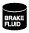

HOW TO USE THIS MANUAL
id000000800100
Range of Topics
• This manual contains procedures for performing all required service operations. The procedures are divided into the following five basic operations:
-
― Removal/Installation
― Disassembly/Assembly
― Replacement
― Inspection
― Adjustment
• Simple operations which can be performed easily just by looking at the vehicle (i.e., removal/installation of parts, jacking, vehicle lifting, cleaning of parts, and visual inspection) have been omitted.
Service Procedure
Inspection, adjustment
-
• Inspection and adjustment procedures are divided into steps. Important points regarding the location and contents of the procedures are explained in detail and shown in the illustrations.
Repair procedure
1. Most repair operations begin with an overview illustration. It identifies the components, shows how the parts fit together, and describes visual part inspection. However, only removal/installation procedures that need to be performed methodically have written instructions.
2. Expendable parts, tightening torques, and symbols for oil, grease, and sealant are shown in the overview illustration. In addition, symbols indicating parts requiring the use of special service tools or equivalent are also shown.
3. Procedure steps are numbered and the part that is the main point of that procedure is shown in the illustration with the corresponding number. Occasionally, there are important points or additional information concerning a procedure. Refer to this information when servicing the related part.
Symbols
• There are eight symbols indicating oil, grease, fluids, sealant, and the use of SST or equivalent. use. These symbols show application points or use of these materials during service.
|
Symbol
|
Meaning
|
Kind
|
|
Apply oil
|
New appropriate engine oil or gear oil
|
|  |
Apply brake fluid
|
New appropriate brake fluid
|
|
Apply automatic transaxle/
transmission fluid
|
New appropriate automatic
transaxle/
transmission fluid
|
|
Apply grease
|
Appropriate grease
|
 |
Apply sealant
|
Appropriate
sealant
|
|
Apply petroleum jelly
|
Appropriate
petroleum jelly
|
 |
Replace part
|
O‐ring, gasket, etc.
|
|
Use SST or
equivalent
|
Appropriate tools
|
Advisory Messages
• You will find several Warnings, Cautions, Notes, Specifications and Upper and Lower Limits in this manual.
Warning
-
• A Warning indicates a situation in which serious injury or death could result if the warning is ignored.
Caution
-
• A Caution indicates a situation in which damage to the vehicle or parts could result if the caution is ignored.
Note
-
• A Note provides added information that will help you to complete a particular procedure.
Specification
-
• The values indicate the allowable range when performing inspections or adjustments.
Upper and lower limits
-
• The values indicate the upper and lower limits that must not be exceeded when performing inspections or adjustments.
Troubleshooting Procedure
Basic flow of troubleshooting
DTC troubleshooting flow (on‐board diagnostic)
-
• Diagnostic trouble codes (DTCs) are important hints for repairing malfunctions that are difficult to simulate. Perform the specific DTC diagnostic inspection to quickly and accurately diagnose the malfunction.
• The on‐board diagnostic function is used during inspection. When a DTC is shown specifying the cause of a malfunction, continue the diagnostic inspection according to the items indicated by the on‐board diagnostic function.
Diagnostic index
-
• The diagnostic index lists the symptoms of specific malfunctions. Select the symptoms related or most closely relating to the malfunction.
Quick diagnosis chart (If mentioned)
-
• The quick diagnosis chart lists diagnosis and inspection procedures to be performed specifically relating to the cause of the malfunction.
Symptom troubleshooting
-
• Symptom troubleshooting quickly determines the location of the malfunction according to symptom type.
Procedures for Use
Using the basic inspection (section 05)
-
• Perform the basic inspection procedure before symptom troubleshooting.
• Perform each step in the order shown.
• The reference column lists the location of the detailed procedure for each basic inspection.
• Although inspections and adjustments are performed according to the reference column procedures, if the cause of the malfunction is discovered during basic inspection, continue the procedures as indicated in the action column.
Using the DTC troubleshooting flow
-
• DTC troubleshooting flow shows diagnostic procedures, inspection methods, and proper action to take for each DTC.
Using the diagnostic index
-
• Malfunction symptoms are listed in the diagnostic index under symptom troubleshooting.
• The exact malfunction symptoms can be selected by following the index.
Using the quick diagnosis chart
-
• The chart lists the relation between the symptom and the cause of the malfunction.
• The chart is effective in quickly narrowing down the relation between symptom and cause of the malfunction. It also specifies a range of common causes when multiple malfunction symptoms occur.
• The appropriate diagnostic inspection relating to a malfunction cause as specified by the symptoms can be selected by looking down the diagnostic inspection column of the chart.
Using the symptom troubleshooting
-
• Symptom troubleshooting shows diagnostic procedures, inspection methods, and proper action to be taken for each trouble symptom.